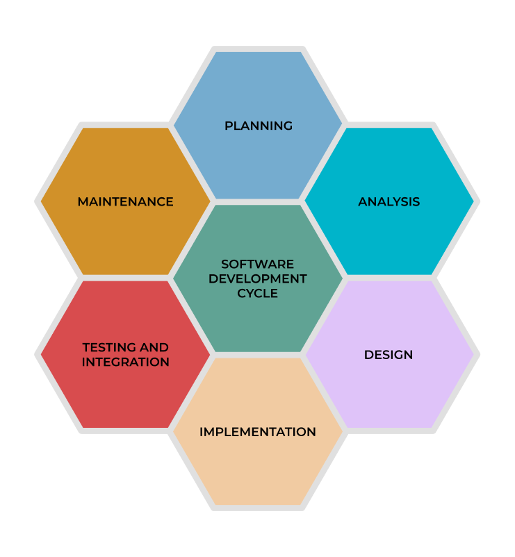
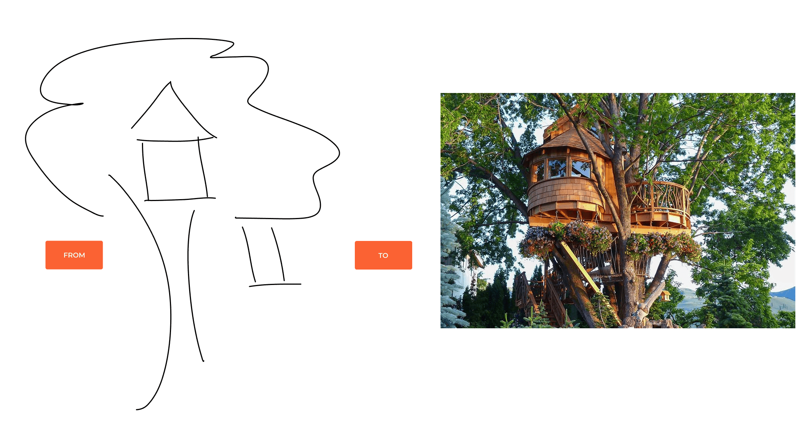

0.3 Software Development Lifecycle Management
{kind=link}
Note
Everything dies — even software.
All applications will eventually be created, updated, reworked, and retired.
“Explain Like I’m 5” (ELI5) of SDLC
{kind=link}
Imagine you’re building a tree house with your friends. Here’s how the process is similar to managing the lifecycle of software:
Requirements Analysis:
You gather your friends to discuss what they want in the tree house: a rope ladder, a slide, or maybe a secret trapdoor. You make a list of all the features that would make the tree house fun and functional for everyone.
In software: This is the phase where developers talk to stakeholders or users to understand what the software needs to do.
Design:
You take out a notebook and draw a detailed plan for the tree house. You decide where the ladder will go, how big the windows will be, and how sturdy the structure needs to be.
In software: Designers and architects create blueprints, diagrams, and workflows for the software, planning how it will work and look.
Development:
You grab your tools and start building the tree house based on your design. You hammer in nails, saw the wood, and construct the walls and roof.
In software: Developers write code to bring the designs to life, turning concepts into a working application.
Testing:
Before letting anyone climb into the tree house, you make sure it’s safe. You test the ladder, check the walls, and ensure the roof won’t leak. If something is wrong, you fix it.
In software: QA teams test the software to find bugs, ensure it works as expected, and meets the requirements.
Deployment:
The tree house is ready! You and your friends start using it for secret meetings or just hanging out.
In software: The application is deployed to users, who can now start using it.
Maintenance:
Over time, the paint might peel, or a board might loosen. You fix these problems and even add new features, like a flag or a zipline, based on your friends’ suggestions.
In software: Developers release updates to fix issues, improve performance, or add new features as needed.
Retirement:
Eventually, you outgrow the tree house and decide to take it down. Maybe you replace it with something new.
In software: When the application is no longer useful, it’s retired, and users transition to a newer solution.
Software Development Life Cycle
The Software Development Life Cycle (SDLC) is a structured process used to manage the entire lifespan of a software application. It ensures that software is developed efficiently, meets user needs, and evolves with changing requirements.
Each stage of the SDLC serves a critical purpose:
Requirements Analysis:
Developers meet with stakeholders to understand the problem the software will solve and what features are needed.
Output: A document outlining functional (what the software does) and non-functional (performance, security, etc.) requirements.
Design:
Architects plan the software’s structure, including its database design, user interface, and system architecture.
Output: Detailed diagrams, mockups, and technical specifications.
Development:
The actual coding happens here. Developers write the application’s logic, connect it to databases, and integrate it with other systems.
Output: The first working version of the software, often called the MVP (Minimum Viable Product).
Testing:
The software is rigorously tested to identify bugs, performance bottlenecks, or security vulnerabilities.
Output: A stable version of the software that meets quality standards.
Deployment:
The tested software is released to users. This can be a big launch or incremental rollouts depending on the strategy.
Output: A live application accessible to users.
Maintenance:
This is the longest phase, where updates, bug fixes, and new features are continuously added based on user feedback.
Output: A constantly evolving and improving software product.
Retirement:
When the software is no longer needed or supported, it’s decommissioned. Data is migrated to a new system, and users are transitioned.
Output: A planned and smooth end-of-life process for the application.
Software Development Life Cycle Management Methodologies
Note
SDLC methodologies provide structured frameworks to guide how software is developed, tested, and deployed. Choosing the right methodology ensures efficiency, collaboration, and quality in the development process.

Common SDLC Methodologies
Waterfall Model:
A step-by-step, sequential approach where each phase must be completed before moving to the next.
Pros: Simple and predictable for well-defined projects.
Cons: Inflexible; hard to accommodate changes once a phase is completed.
Agile Model:
An iterative and incremental approach emphasizing collaboration and adaptability.
Pros: Flexible; great for projects with changing requirements.
Cons: Requires close communication and may lack predictability.
Scrum:
A specific Agile framework that uses sprints (short work cycles) to deliver small, usable increments of a product.
Pros: Clear timelines and frequent delivery of features.
Cons: Requires disciplined team collaboration.
Lean:
Focuses on maximizing value and minimizing waste.
Pros: High efficiency and customer focus.
Cons: Can be challenging to implement in traditional organizations.
Spiral Model:
Combines iterative development with risk management. Each iteration includes planning, development, and testing.
Pros: Ideal for complex, high-risk projects.
Cons: Can be time-consuming and expensive.
Kanban:
A visual workflow method using a board to manage and optimize work in progress.
Pros: Real-time adaptability; excellent for operational projects.
Cons: May lack deadlines or clear milestones.
Extreme Programming (XP):
Focuses on high-quality code with practices like pair programming, test-driven development, and continuous feedback.
Pros: High-quality software; excellent for complex projects.
Cons: Requires skilled teams and customer involvement.
Rapid Application Development (RAD):
Prioritizes speed by developing components in parallel and integrating them quickly.
Pros: Fast delivery and flexibility.
Cons: Less suitable for large-scale or highly complex projects.
V-Model:
An extension of Waterfall where validation and testing are emphasized for every development stage.
Pros: High focus on testing and quality.
Cons: Like Waterfall, it’s rigid and not ideal for projects with evolving requirements.
DevOps:
Combines development and IT operations to ensure faster and more reliable releases.
Pros: Continuous delivery, automation, and collaboration.
Cons: Requires a cultural shift and significant tooling investment.
Choosing the Right Methodology
Choosing the right SDLC methodology depends on the nature of your project:
Use Waterfall for simple, predictable projects with clear requirements.
Adopt Agile for dynamic projects with evolving needs.
Choose DevOps for organizations looking to improve collaboration and streamline releases.
Consider Kanban or Lean for operations-focused workflows.
Understanding these methodologies allows teams to deliver better software by selecting the framework that best suits their needs.